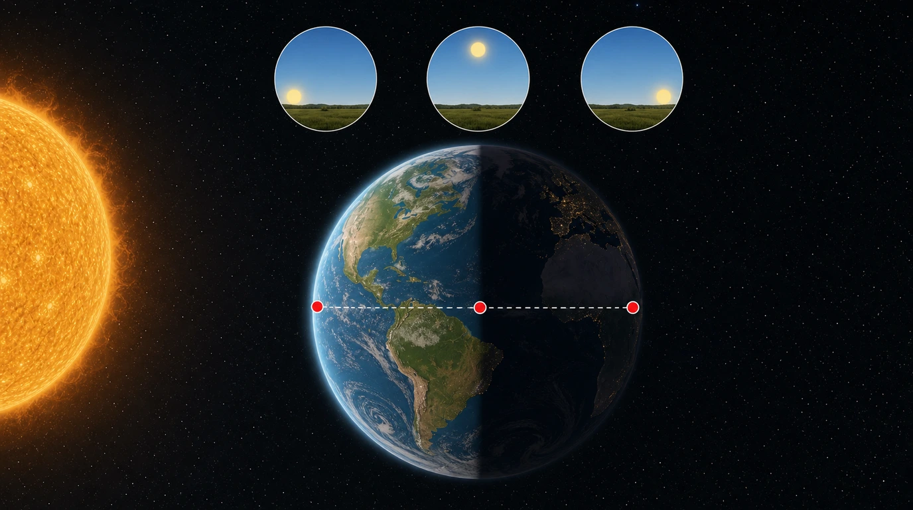
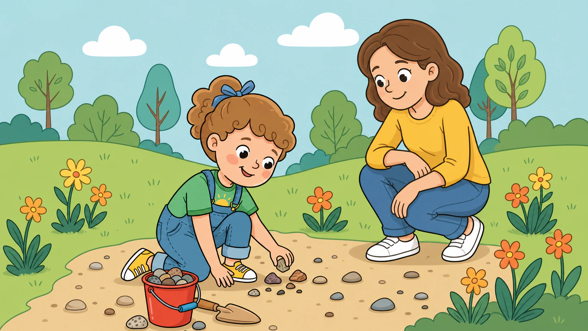

Human visual review only. Automated checks cannot reliably catch anatomy slop.
/guided-reading/nonfiction/first-facts/book-17/page-001.webp/guided-reading/nonfiction/first-facts/book-17/page-002.webp/guided-reading/nonfiction/first-facts/book-17/page-003.webp/guided-reading/nonfiction/first-facts/book-17/page-004.webp/guided-reading/nonfiction/first-facts/book-17/page-005.webp/guided-reading/nonfiction/first-facts/book-17/page-006.webp
/guided-reading/nonfiction/first-facts/book-17/page-007.webp/guided-reading/nonfiction/first-facts/book-18/cover.webp/guided-reading/nonfiction/first-facts/book-18/page-001.webp/guided-reading/nonfiction/first-facts/book-18/page-002.webp/guided-reading/nonfiction/first-facts/book-18/page-003.webp/guided-reading/nonfiction/first-facts/book-18/page-004.webp/guided-reading/nonfiction/first-facts/book-18/page-005.webp/guided-reading/nonfiction/first-facts/book-18/page-006.webp/guided-reading/nonfiction/first-facts/book-18/page-007.webp/guided-reading/nonfiction/first-facts/book-19/cover.webp/guided-reading/nonfiction/first-facts/book-19/page-001.webp/guided-reading/nonfiction/first-facts/book-19/page-002.webp/guided-reading/nonfiction/first-facts/book-19/page-003.webp/guided-reading/nonfiction/first-facts/book-19/page-004.webp/guided-reading/nonfiction/first-facts/book-19/page-005.webp/guided-reading/nonfiction/first-facts/book-19/page-006.webp/guided-reading/nonfiction/first-facts/book-19/page-007.webp/guided-reading/nonfiction/first-facts/book-20/cover.webp/guided-reading/nonfiction/first-facts/book-20/page-001.webp/guided-reading/nonfiction/first-facts/book-20/page-002.webp/guided-reading/nonfiction/first-facts/book-20/page-003.webp/guided-reading/nonfiction/first-facts/book-20/page-004.webp/guided-reading/nonfiction/first-facts/book-20/page-005.webp/guided-reading/nonfiction/first-facts/book-20/page-006.webp/guided-reading/nonfiction/first-facts/book-20/page-007.webp/guided-reading/nonfiction/first-facts/book-20/page-008.webp/guided-reading/nonfiction/first-facts/book-21/cover.webp/guided-reading/nonfiction/first-facts/book-21/page-001.webp/guided-reading/nonfiction/first-facts/book-21/page-002.webp/guided-reading/nonfiction/first-facts/book-21/page-003.webp/guided-reading/nonfiction/first-facts/book-21/page-004.webp/guided-reading/nonfiction/first-facts/book-21/page-005.webp/guided-reading/nonfiction/first-facts/book-21/page-006.webp/guided-reading/nonfiction/first-facts/book-21/page-007.webp/guided-reading/nonfiction/first-facts/book-22/cover.webp/guided-reading/nonfiction/first-facts/book-22/page-001.webp/guided-reading/nonfiction/first-facts/book-22/page-002.webp/guided-reading/nonfiction/first-facts/book-22/page-003.webp/guided-reading/nonfiction/first-facts/book-22/page-004.webp/guided-reading/nonfiction/first-facts/book-22/page-005.webp/guided-reading/nonfiction/first-facts/book-22/page-006.webp/guided-reading/nonfiction/first-facts/book-22/page-007.webp/guided-reading/nonfiction/first-facts/book-23/cover.webp/guided-reading/nonfiction/first-facts/book-23/page-001.webp/guided-reading/nonfiction/first-facts/book-23/page-002.webp/guided-reading/nonfiction/first-facts/book-23/page-003.webp/guided-reading/nonfiction/first-facts/book-23/page-004.webp/guided-reading/nonfiction/first-facts/book-23/page-005.webp/guided-reading/nonfiction/first-facts/book-23/page-006.webp/guided-reading/nonfiction/first-facts/book-23/page-007.webp/guided-reading/nonfiction/first-facts/book-23/page-008.webp/guided-reading/nonfiction/first-facts/book-24/cover.webp/guided-reading/nonfiction/first-facts/book-24/page-001.webp/guided-reading/nonfiction/first-facts/book-24/page-002.webp/guided-reading/nonfiction/first-facts/book-24/page-003.webp/guided-reading/nonfiction/first-facts/book-24/page-004.webp/guided-reading/nonfiction/first-facts/book-24/page-005.webp
/guided-reading/nonfiction/first-facts/book-24/page-006.webp/guided-reading/nonfiction/first-facts/book-24/page-007.webp/guided-reading/nonfiction/first-facts/book-25/cover.webp/guided-reading/nonfiction/first-facts/book-25/page-001.webp/guided-reading/nonfiction/first-facts/book-25/page-002.webp/guided-reading/nonfiction/first-facts/book-25/page-003.webp/guided-reading/nonfiction/first-facts/book-25/page-004.webp/guided-reading/nonfiction/first-facts/book-25/page-005.webp/guided-reading/nonfiction/first-facts/book-25/page-006.webp/guided-reading/nonfiction/first-facts/book-25/page-007.webp/guided-reading/nonfiction/first-facts/book-25/page-008.webp/guided-reading/nonfiction/first-facts/book-25/page-009.webp/guided-reading/nonfiction/first-facts-level-a/book-01/cover.webp/guided-reading/nonfiction/first-facts-level-a/book-01/page-001.webp/guided-reading/nonfiction/first-facts-level-a/book-01/page-002.webp/guided-reading/nonfiction/first-facts-level-a/book-01/page-003.webp/guided-reading/nonfiction/first-facts-level-a/book-01/page-004.webp